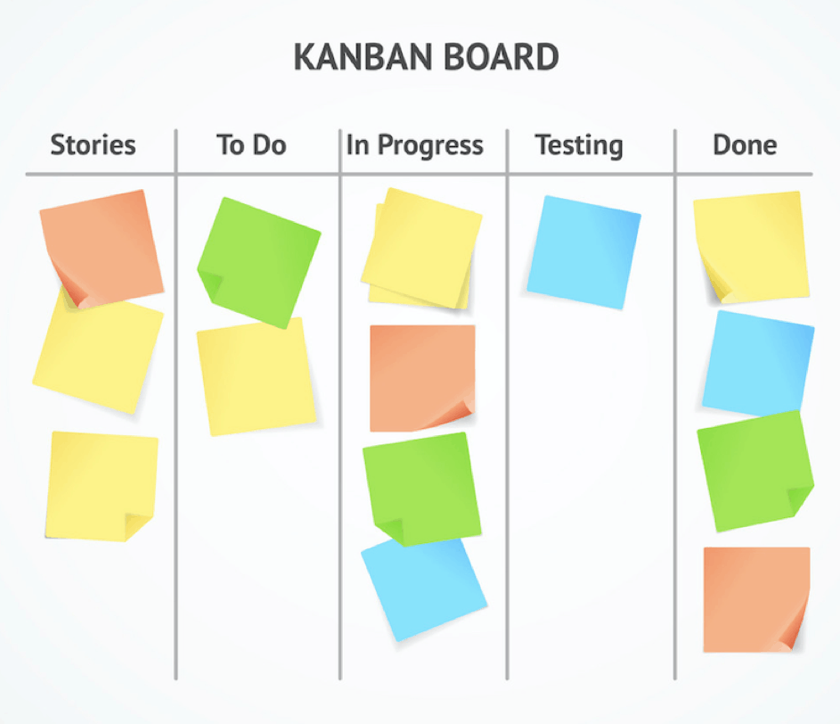

Co to jest kanban ?
Kanban – opracowana w latach pięćdziesiątych w Japonii metoda
sterowania produkcją. Słowo kanban w wolnym tłumaczeniu można w
poniższym przypadku oddać jako „spis widoczny”. W pierwotnym znaczeniu
– w języku japońskim – oznacza: szyld, tabliczkę z napisem
informującym, billboard.

Cele metody Kanban
Cele metody Kanban Metoda Kanban jest często opisywana przez hasło „7
razy żadnych”. Celem metody jest doprowadzenie do sytuacji, gdy w
organizacji nie będzie:
żadnych braków,
żadnych zapasów,
żadnych opóźnień,
żadnych kolejek,
żadnych bezczynności,
żadnych zbędnych czynności i kontroli,
żadnych zbędnych przemieszczeń.
Efektem stosowania metody Kanban jest redukcja liczby magazynów
przedprodukcyjnych, międzyoperacyjnych oraz wyrobów gotowych. Metoda
Kanban jest odporna na wahania popytu oraz nie przewiduje
przygotowania rezerw, jednak umiejętnie wprowadzona, pozwala na bardzo
duże ograniczenie kosztów produkcji.